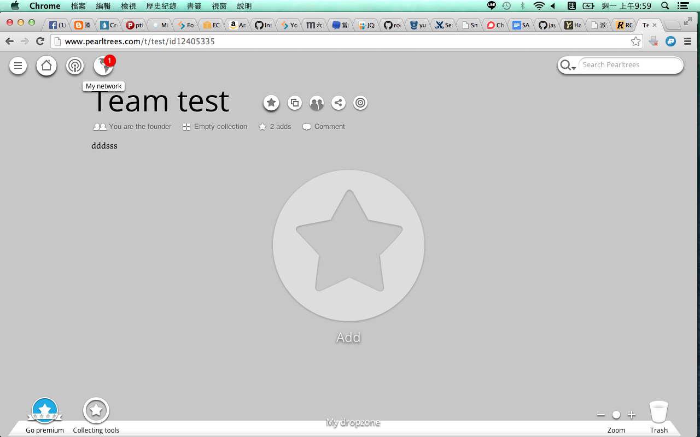
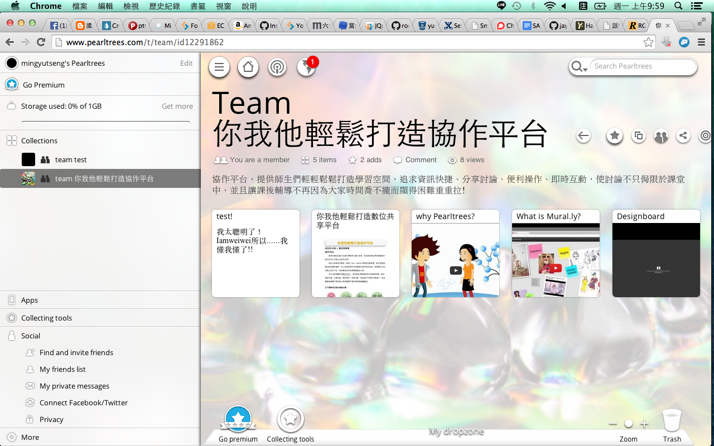
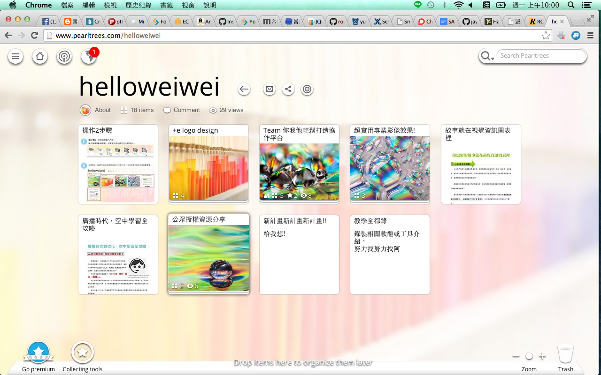
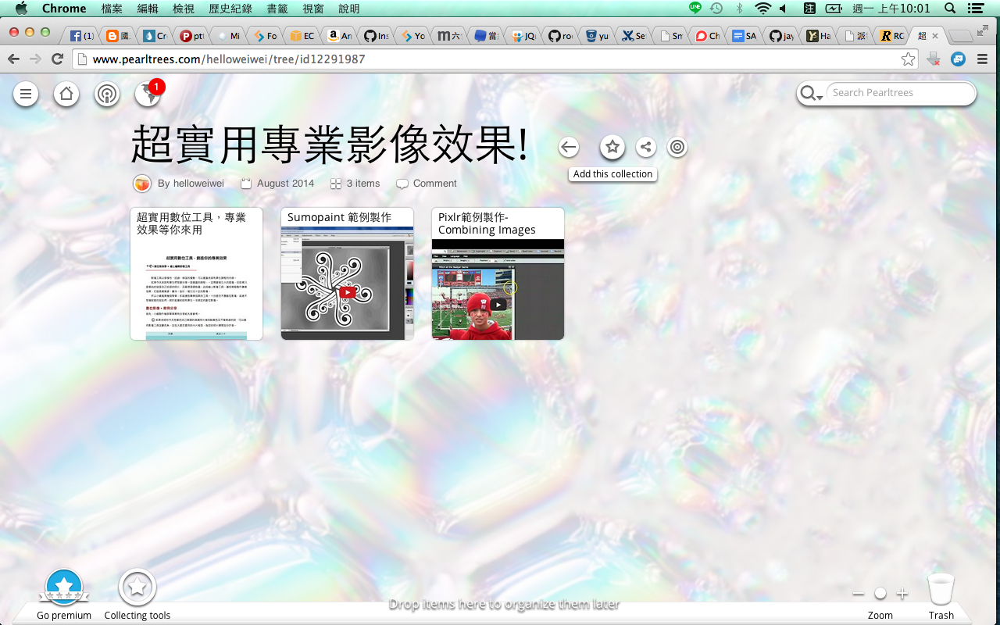
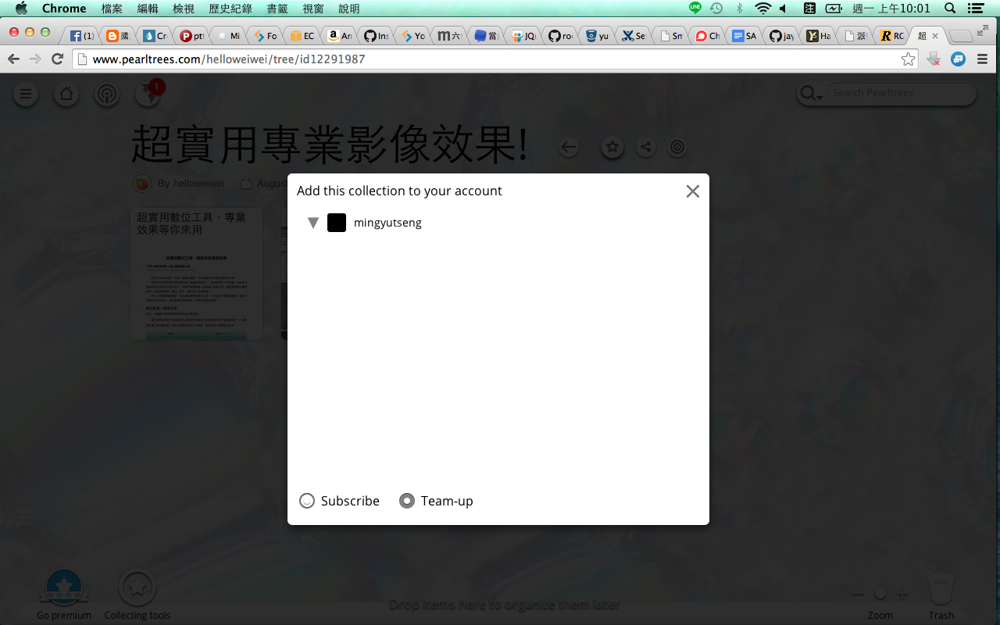
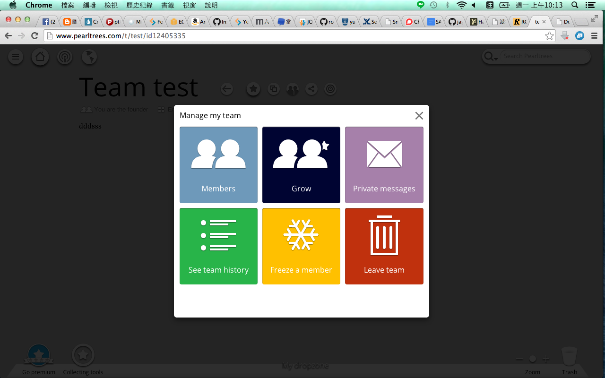
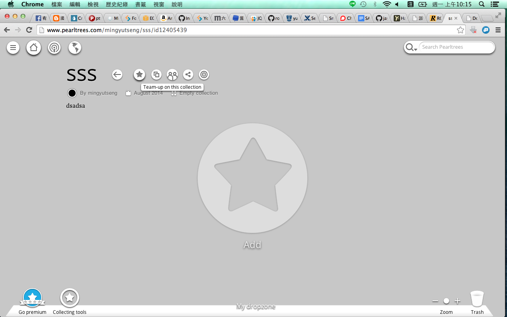
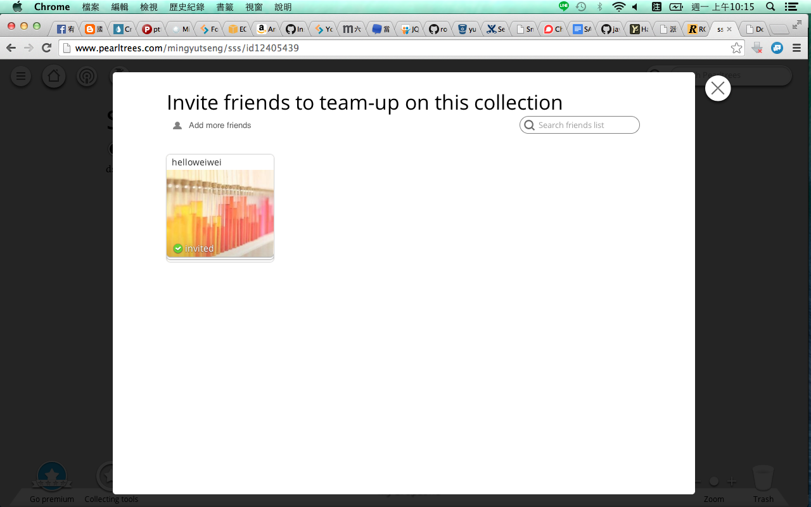

-
1.點擊左上角地球進入Ｍy network(類似ＦＢ會進入所有通知，也就是你剛剛line給我的兩張畫面的第一張畫面)

-
2.點擊左上角三條槓會開啟左側資訊欄，collections就是你現在有參與的專案

-
3.假設這是他人的頁面，點擊進入他人的頁面。

-
4.進入頁面後，點擊(標題：超實用專業...)旁的星星圖案

-
5.可以選擇訂閱（subscribe），或是成為團隊（team-up）。 *collection才可以選擇成為團隊

-
6.如果已經是團隊的專案，應該會跳出這個視窗，選擇Ｇrow即可跳出上面那張圖的選擇視窗

-
7.現在這是我得專案，點擊標題(ＳＳＳ)旁邊的兩個人的ＩＣＯＮ即可跳出想要邀請的人的list

-
8.要是朋友才可以邀請成團隊。如果已經是團隊專案，一樣點選Grow即可
